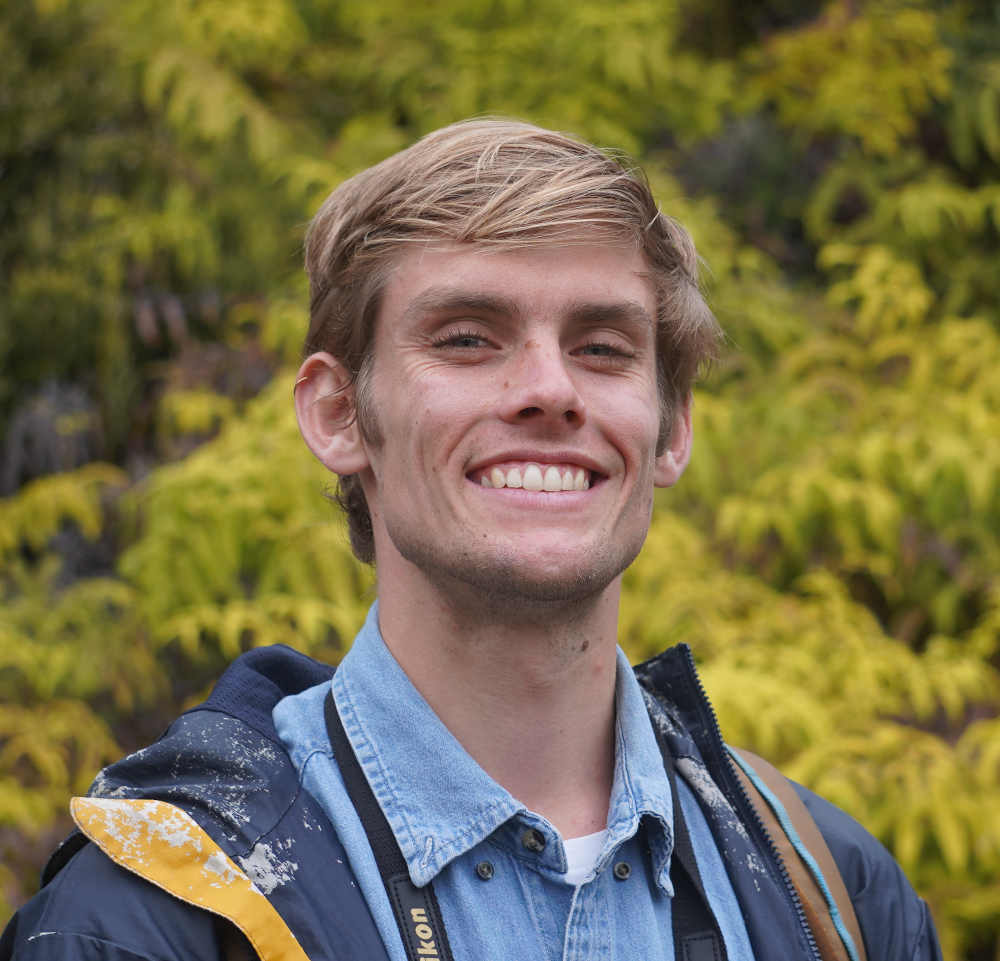
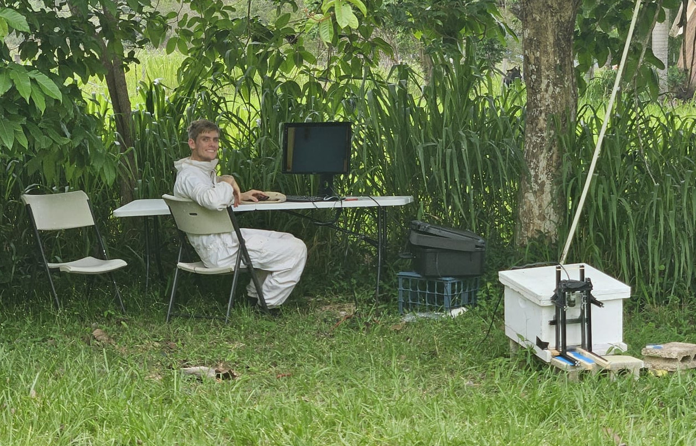

About

I’m an interdisciplinary computer scientist who uses deep learning to better understand the living world. From the oak trees near my childhood home in California to the coquí frogs singing outside my window in Puerto Rico, my connection to the nonhuman world has always shaped what I work on. What excites me most is how modern technology lets us see patterns in environmental systems that were previously impossible to measure, from subtle shifts in behavior to complex color patterns or ecological interactions across time. I’ve found that my strongest contribution isn’t just studying organisms directly, but building the computational tools that help us study them at scale.
I build end-to-end systems: curating messy real-world datasets, designing scalable preprocessing workflows, training models, and understanding where they break. My current M.S. research focuses on representation learning for fine-grained recognition, including pretraining strategies that extract richer structure from limited or imperfect labels. I’m fascinated by using deep learning to unlock hidden structure in biological data.
I’ve developed edge inference pipelines for behavioral monitoring, large-scale re-identification systems across millions of images, and multimodal workflows that combine visual features with contextual metadata. I’m especially interested in efficient specialization and representation learning approaches that make better use of noisy, weakly labeled, or partially observed data — which is often the reality in environmental science.
Gallery

Field work experience
Skills & Expertise
Languages
- English: Native
- Spanish: Advanced Proficiency
Skills
- Machine Learning with PyTorch
- C++ and Bash Scripting
- Scientific Translation (Spanish)
- Field Sampling and Backcountry Travel
- Experiential Education and Group Leading
- Macro Photography